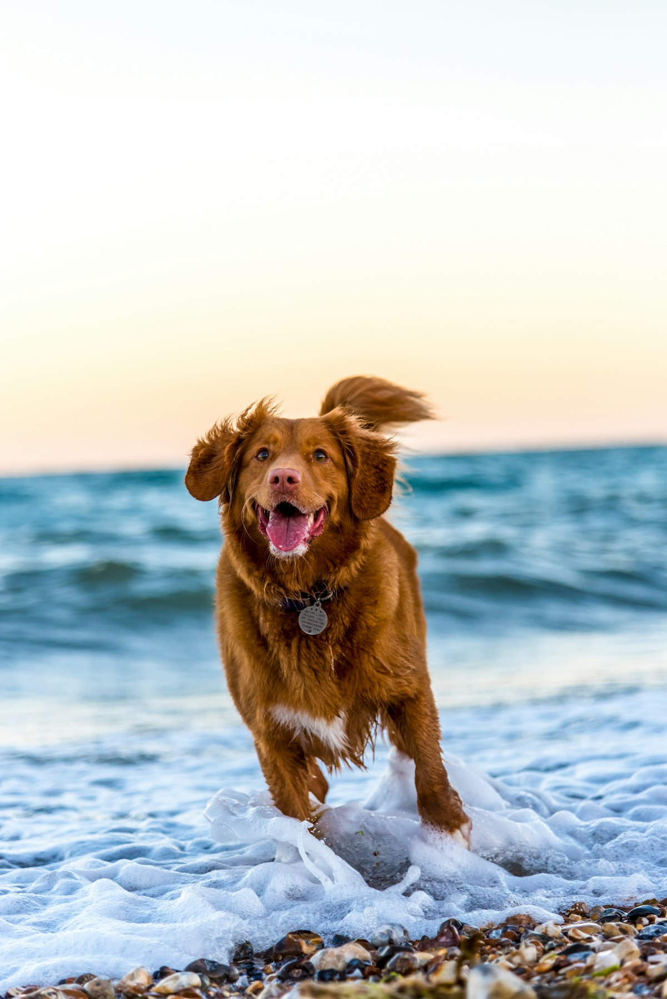
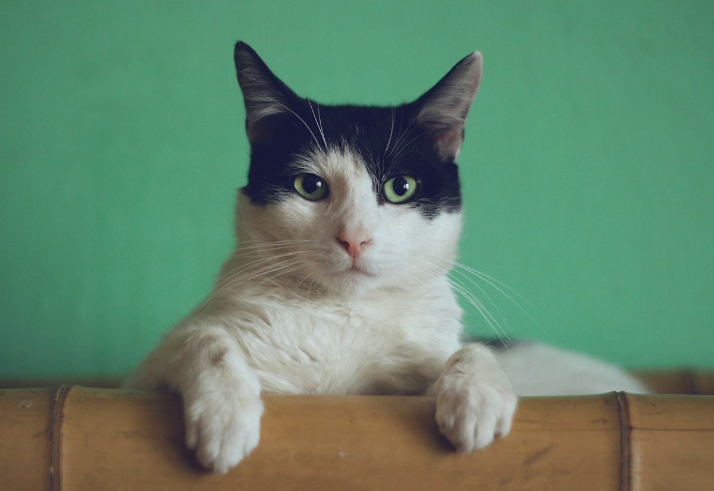

Servicios
Atención completa para perros y gatos.
🩺
Consulta general
Revisión completa y plan de tratamiento.
💉
Vacunación
Esquemas para cachorros, perros y gatos.
🧠
Neurología
Estudio y valoración neurológica.
🦴
Ortopedia
Revisión de rodillas, cadera y articulaciones.
🛁
Baño y estética
Baño cuidadoso, incluso para mascotas nerviosas.
🪱
Desparasitación
Interna y externa, con calendario.



Fotografías de stock para la propuesta; se reemplazarán por fotos reales del consultorio y sus pacientes.